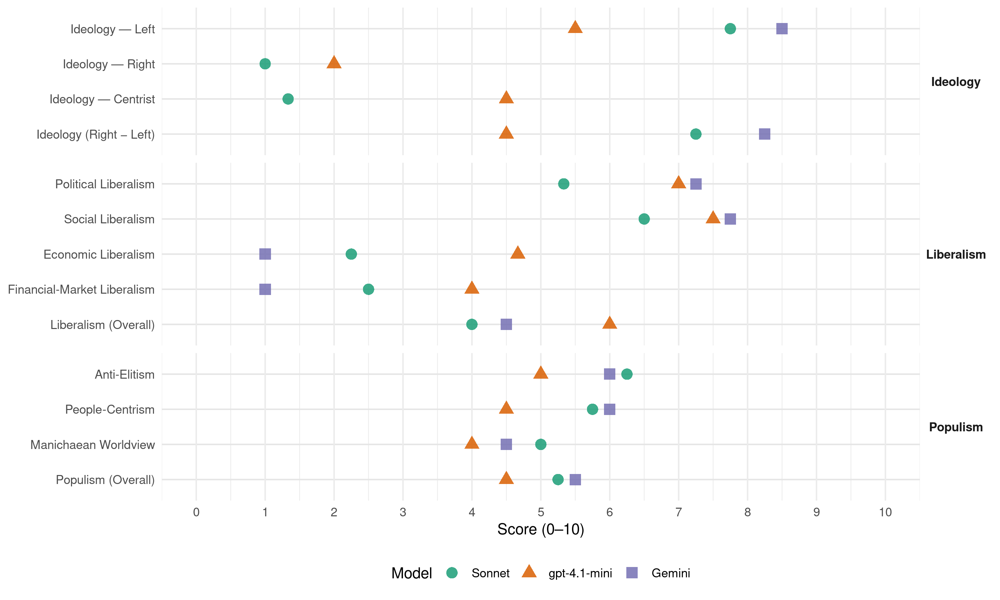

CDU (Portugal, 2005)
manifesto_id 35229_200502
Get full text: This site shows derived annotations and short verbatim quotes only. The full manifesto text is © Manifesto Project / WZB — obtain it via manifesto-project.wzb.eu using the manifesto_id above.
Headline scores
| Dimension | Sonnet | gpt-4.1-mini | Gemini |
|---|---|---|---|
| Populism (Overall) | 5.2 | 4.5 | 5.5 |
| Anti-Elitism | 6.2 | 5.0 | 6.0 |
| People-Centrism | 5.8 | 4.5 | 6.0 |
| Manichaean Worldview | 5.0 | 4.0 | 4.5 |
| Ideology (Right − Left) | 7.2 | 4.5 | 8.2 |
| Liberalism (Overall) | 4.0 | 6.0 | 4.5 |
| Political Liberalism | 5.3 | 7.0 | 7.2 |
| Social Liberalism | 6.5 | 7.5 | 7.8 |
| Economic Liberalism | 2.2 | 4.7 | 1.0 |
| Financial-Market Liberalism | 2.5 | 4.0 | 1.0 |
Evidence per dimension
Economic Liberalism
Gemini · score 1.0 · verified · chunk 1
“pôr fim às privatizações e ao desmantelamento”
defendendo a produção nacional; pondo fim às privatizações e ao desmantelamento e liberalização de serviços públicos
Gemini · score 1.0 · verified · chunk 2
“vedando ao sector privado e misto”
garantindo a administração pública directa do Estado do domínio público hídrico, vedando ao sector privado e misto a exploração dos serviços de água
Gemini · score 1.0 · verified · chunk 3
“pôr fim ao processo de entrega dos novos hospitais ao sector privado”
Hospitais S.A. no sector público administrativo e pôr fim ao processo de entrega dos novos hospitais ao sector privado.
Gemini · score 1.0 · verified · chunk 4
“revogação da política de liberalizações e privatizações”
reversão da Estratégia de Lisboa com a revogação da política de liberalizações e privatizações, e o desenvolvimento de uma política
gpt-4.1-mini · score 6.0 · verified · chunk 1
“fim do processo de privatizações, incluindo o cancelamento imediato”
O PCP defende políticas macro-económicas que assentem, ainda, no desenvolvimento e modernização das actividades produtivas, na defesa da produção nacional, na dinamização das actividades de investigação associadas à produção, particularmente em sectores de forte conteúdo tecnológico e/ou geradores de emprego, no fim do processo de privatizações e na reapreciação exaustiva de todos os processos de privatização,
gpt-4.1-mini · score 4.0 · verified · chunk 2
“política de ordenamento do território”
O PCP defende uma política de ordenamento do território que constitua vector essencial no delinear e no concretizar de estratégias de desenvolvimento do país, encarando o território nacional como um todo e valorizando as suas especificidades e complementaridades.
gpt-4.1-mini · score 5.0 · mixed · chunk 3
“política de ordenamento do território, gestão de solos e urbanismo”
Adoptar políticas de ordenamento do território, gestão de solos e urbanismo que garantam o direito de urbanizar como eminentemente público.
gpt-4.1-mini · score 4.0 · verified · chunk 4
“rejeição da política de liberalizações e privatizações”
…a reversão da Estratégia de Lisboa com a revogação da política de liberalizações e privatizações, e o desenvolvimento de uma política que promova e reforce o sector público nacional e os serviços públicos…
Sonnet · score 2.0 · verified · chunk 1
“fim das privatizações e ao desmantelamento”
pondo fim às privatizações e ao desmantelamento e liberalização de serviços públicos essenciais; defendendo como fundamental um sector público forte
Sonnet · score 2.0 · verified · chunk 2
“Oposição firme às políticas de mercantilização da água”
Oposição firme às políticas de mercantilização da água e implementação efectiva das medidas que visam a sua protecção, a da saúde pública no território português
Sonnet · score 2.0 · verified · chunk 3
“liberalização total do mercado do arrendamento”
não poderão conduzir à liberalização total do mercado do arrendamento, com a consequente instabilidade e generalização da precariedade habitacional
Sonnet · score 3.0 · verified · chunk 4
“revogação da política de liberalizações e privatizações”
a reversão da Estratégia de Lisboa com a revogação da política de liberalizações e privatizações, e o desenvolvimento de uma política que promova e reforce o sector público nacional
Financial-Market Liberalism
Gemini · score 1.0 · verified · chunk 1
“tributação efectiva das empresas bancárias e seguradoras”
eliminação dos benefícios fiscais em operações financeiras, da tributação efectiva das empresas bancárias e seguradoras, da revisão dos privilégios
Gemini · score 1.0 · verified · chunk 2
“imposição de taxas sobre transacções financeiras”
Penalização e desencorajamento das operações especulativas, através de medidas de política fiscal (imposição de taxas sobre transacções financeiras).
Gemini · score 1.0 · verified · chunk 3
“eliminação do segredo bancário”
confiscação dos patrimónios de origem criminosa e de eliminação do segredo bancário; optimizar a acção das
Gemini · score 1.0 · verified · chunk 4
“combate eficaz aos movimentos de capitais especulativos”
choques económicos externos; o combate eficaz aos movimentos de capitais especulativos, nomeadamente pela sua tributação
gpt-4.1-mini · score 5.0 · verified · chunk 1
“revisão geral do estatuto dos benefícios fiscais”
revisão geral do estatuto dos benefícios fiscais com a eliminação da generalidade dos referentes a rendimentos provenientes de operações financeiras e aperfeiçoamento dos destinados ao incremento do investimento produtivo (em especial em regiões do interior menos desenvolvidas) e a situações socialmente justificáveis; aprofundamento do regime de tributação das empresas financeiras e seguradoras,
gpt-4.1-mini · score 3.0 · verified · chunk 2
“eliminação dos offshores e outros paraísos fiscais”
Regulamentação e regulação − Dinamização e apoio ao sector público financeiro; − Promoção de medidas no sector, de prevenção e combate ao branqueamento de capitais e à fraude fiscal; − Eliminação dos offshores e outros paraísos fiscais e levantamento do sigilo bancário para efeitos fiscais; − Eliminação das isenções fiscais em sede de IRC (offshore da Madeira e mais-valias das SGPS); − Monitorização e acompanhamento, e se necessário intervenção, sobre os preços das comissões bancárias, ou seja, sobre os custos dos serviços bancários;
Sonnet · score 2.0 · verified · chunk 1
“tributação das vendas de títulos em Bolsa”
tributação das operações de venda de títulos em Bolsa ou fora dela, e bem assim das operações cambiais não suportadas em transacções comerciais
Sonnet · score 2.0 · verified · chunk 2
“Penalização e desencorajamento das operações especulativas”
Penalização e desencorajamento das operações especulativas, através de medidas de política fiscal (imposição de taxas sobre transacções financeiras).
Sonnet · score 3.0 · verified · chunk 3
“eliminação do segredo bancário”
monitorizar a aplicação das normas para a confiscação dos patrimónios de origem criminosa e de eliminação do segredo bancário
Sonnet · score 3.0 · verified · chunk 4
“combate eficaz aos movimentos de capitais especulativos”
o combate eficaz aos movimentos de capitais especulativos, nomeadamente pela sua tributação e o fim dos paraísos fiscais (offshores)
Political Liberalism
Gemini · score 8.0 · verified · chunk 1
“defesa e o reforço do regime democrático”
UMA POLÍTICA ORIENTADA PARA A DEFESA E O REFORÇO DO REGIME DEMOCRÁTICO, e o exercício dos direitos constitucionais
Gemini · score 6.0 · verified · chunk 2
“de acordo com a Constituição da República”
uma profunda reforma da estrutura agrária nos campos do Sul, de acordo com a Constituição da República e no quadro da realidade política
Gemini · score 7.0 · verified · chunk 3
“aplicação do princípio constitucional da gestão democrática”
condições de funcionamento. § A aplicação do princípio constitucional da gestão democrática, segundo o qual os órgãos directivos
Gemini · score 8.0 · verified · chunk 4
“Independência do poder judicial face ao poder político”
Com esse objectivo, o PCP defenderá, na próxima legislatura: § Independência do poder judicial face ao poder político.
gpt-4.1-mini · score 7.0 · verified · chunk 1
“defesa e o reforço do regime democrático”
UMA POLÍTICA ORIENTADA PARA A DEFESA E O REFORÇO DO REGIME DEMOCRÁTICO, e o exercício dos direitos constitucionais, credibilizando as funções políticas e das instituições públicas, realizando reformas verdadeiramente democráticas do Estado e da Administração Pública, combatendo a corrupção e o tráfico de influências, que ponha cobro aos escandalosos benefícios para o exercício de altos cargos públicos, elimine a promiscuidade entre os interesses públicos e os dos grandes grupos económicos;
gpt-4.1-mini · score 7.0 · verified · chunk 2
“defesa dos direitos dos trabalhadores”
Defesa e ampliação dos direitos dos trabalhadores, com vigilância reforçada sobre a situação nas novas empresas e a recusa da privatização de serviços.
gpt-4.1-mini · score 7.0 · verified · chunk 3
“garantir a participação efectiva dos jovens na sua concepção e construção”
Uma política de esquerda para a juventude exige a participação efectiva dos jovens na sua concepção e construção, pressupõe uma profunda transformação da sociedade e assume os direitos e aspirações juvenis e a sua realização individual e colectiva, motores e objectivos de um projecto político que atravessa os diferentes sectores da acção política que influenciam e interferem na vida dos jovens.
gpt-4.1-mini · score 7.0 · verified · chunk 4
“garantia efectiva do exercício do direito de oposição”
…Garantia efectiva do exercício do direito de oposição, através do cumprimento escrupuloso do seu estatuto legal e de uma Reforma do Parlamento que valorize o debate político e dê garantias de fiscalização democrática da actividade do governo e da Administração Pública…
Sonnet · score 5.0 · mixed · chunk 1
“democracia representativa com a democracia participativa”
que conjugue a democracia representativa com a democracia participativa, estimulando a participação dos cidadãos na vida cívica, social e política
Sonnet · score 4.0 · verified · chunk 2
“ampla e profunda discussão pública”
Revisão do Plano Nacional da Água, precedida de uma ampla e profunda discussão pública, que nunca teve lugar.
Sonnet · score 5.0 · verified · chunk 3
“gestão democrática das instituições”
O aperfeiçoamento dos processos de direcção e gestão democrática das instituições de ensino superior, em todos os sub-sistemas
Sonnet · score 7.0 · verified · chunk 4
“Independência do poder judicial face ao poder político”
Com esse objectivo, o PCP defenderá, na próxima legislatura: § Independência do poder judicial face ao poder político.
Liberalism (Overall)
Gemini · score 5.0 · verified · chunk 1
“defesa e o reforço do regime democrático”
UMA POLÍTICA ORIENTADA PARA A DEFESA E O REFORÇO DO REGIME DEMOCRÁTICO, e o exercício dos direitos constitucionais
Gemini · score 4.0 · verified · chunk 2
“vedando ao sector privado e misto”
garantindo a administração pública directa do Estado do domínio público hídrico, vedando ao sector privado e misto a exploração dos serviços de água
Gemini · score 4.0 · verified · chunk 3
“aplicação do princípio constitucional da gestão democrática”
condições de funcionamento. § A aplicação do princípio constitucional da gestão democrática, segundo o qual os órgãos directivos
Gemini · score 5.0 · verified · chunk 4
“Independência do poder judicial face ao poder político”
Com esse objectivo, o PCP defenderá, na próxima legislatura: § Independência do poder judicial face ao poder político.
gpt-4.1-mini · score 7.0 · verified · chunk 1
“defesa e o reforço do regime democrático”
UMA POLÍTICA ORIENTADA PARA A DEFESA E O REFORÇO DO REGIME DEMOCRÁTICO, e o exercício dos direitos constitucionais, credibilizando as funções políticas e das instituições públicas, realizando reformas verdadeiramente democráticas do Estado e da Administração Pública, combatendo a corrupção e o tráfico de influências,
gpt-4.1-mini · score 5.0 · verified · chunk 2
“defesa dos direitos dos trabalhadores”
Defesa e ampliação dos direitos dos trabalhadores, com vigilância reforçada sobre a situação nas novas empresas e a recusa da privatização de serviços.
gpt-4.1-mini · score 6.0 · verified · chunk 3
“garantir a participação efectiva dos jovens na sua concepção e construção”
Uma política de esquerda para a juventude exige a participação efectiva dos jovens na sua concepção e construção, pressupõe uma profunda transformação da sociedade e assume os direitos e aspirações juvenis e a sua realização individual e colectiva, motores e objectivos de um projecto político que atravessa os diferentes sectores da acção política que influenciam e interferem na vida dos jovens.
gpt-4.1-mini · score 6.0 · verified · chunk 4
“Garantia efectiva do exercício do direito de oposição”
…Garantia efectiva do exercício do direito de oposição, através do cumprimento escrupuloso do seu estatuto legal e de uma Reforma do Parlamento que valorize o debate político e dê garantias de fiscalização democrática da actividade do governo e da Administração Pública…
Sonnet · score 4.0 · mixed · chunk 1
“sector público forte e dinâmico”
defendendo como fundamental um sector público forte, dinâmico e eficiente, assegurando a manutenção dos centros de decisão e da soberania económica nacionais
Sonnet · score 3.0 · verified · chunk 2
“paragem imediata de todos os processos de privatização”
A paragem imediata de todos os processos de privatização das empresas do sector energético, com vista à recuperação da capacidade de intervenção e direcção política do Estado
Sonnet · score 4.0 · verified · chunk 3
“intervenção do Estado na valorização”
na não intervenção do Estado na valorização do sistema público de ensino, na não promoção da eficácia e eficiência do Serviço Nacional de Saúde
Sonnet · score 5.0 · verified · chunk 4
“Garantia plena da liberdade de expressão, da liberdade de imprensa”
Garantia plena da liberdade de expressão, da liberdade de imprensa, do direito à informação, nomeadamente através de medidas anticoncentração
Anti-Elitism
Gemini · score 8.0 · verified · chunk 1
“satisfazendo clientelas partidárias e grupos de interesses”
nomeação pública, satisfazendo clientelas partidárias e grupos de interesses e criando situações de indecorosa
Gemini · score 8.0 · verified · chunk 2
“defesa dos interesses dos grupos capitalistas”
na continuidade do concretizado pelos governos do PS, teve como fio condutor a defesa dos interesses dos grupos capitalistas que dominam o sector financeiro.
Gemini · score 4.0 · verified · chunk 3
“pôr fim à gestão partidarizada”
Hospital Amadora-Sintra. § Pôr fim à gestão partidarizada das unidades públicas de saúde e escolher por
Gemini · score 4.0 · verified · chunk 4
“sucessivos governos prestaram pouca ou nenhuma atenção”
Nos últimos 28 anos os sucessivos governos prestaram pouca ou nenhuma atenção ao desporto em todas as áreas
gpt-4.1-mini · score 8.0 · verified · chunk 1
“submissão aos ditames do Pacto de Estabilidade e Crescimento”
Assim foi com a submissão aos ditames do Pacto de Estabilidade e Crescimento, totalmente desadequado às necessidades do país, invocando a necessidade de consolidação das contas públicas, mas traduzindo-se na prática numa política de cortes orçamentais cegos, pondo em causa diversos serviços e actividades, numa diminuição drástica do investimento e no recurso sistemático a receitas extraordinárias para conter formalmente o défice abaixo dos 3% do PIB, sendo certo que na realidade isso está longe de acontecer.
gpt-4.1-mini · score 3.0 · verified · chunk 2
“defesa dos interesses dos grupos capitalistas que dominam o sector financeiro”
A política dos governos PSD/CDS-PP, na continuidade do concretizado pelos governos do PS, teve como fio condutor a defesa dos interesses dos grupos capitalistas que dominam o sector financeiro. A evolução e principais tendências do «sistema financeiro» português (bancário e segurador) são disso a prova cabal.
gpt-4.1-mini · score 7.0 · verified · chunk 3
“políticas assentes numa injusta repartição da riqueza nacional”
A pobreza e a exclusão social não são fenómenos naturais nem uma fatalidade a que estão sujeitas certas camadas sociais. Antes são devidas a políticas assentes numa injusta repartição da riqueza nacional, no trabalho precário e sem direitos, na não revalorização dos salários e pensões, na não intervenção do Estado na valorização do sistema público de ensino, na não promoção da eficácia e eficiência do Serviço Nacional de Saúde, na não fortalecimento do sistema público de Segurança Social, factores decisivos na promoção da igualdade de direitos e de oportunidades.
gpt-4.1-mini · score 2.0 · verified · chunk 4
“combater firme e permanentemente a corrupção em toda a Administração Pública”
…Reforço da transparência da gestão pública, rigor na admissão de pessoal, pondo-se fim à partidarização do aparelho do Estado e garantindo a participação dos trabalhadores na gestão da Administração Pública. Combater firme e permanentemente a corrupção em toda a Administração Pública. Criar condições para a investigação e julgamento mais céleres dos processos que envolvem grandes grupos económicos e responsáveis políticos…
Sonnet · score 8.0 · verified · chunk 1
“sucessivos governos do PS, PSD e CDS-PP”
rompa com um longo ciclo de vinte e oito anos de políticas de direita prosseguidas pelos sucessivos governos do PS, PSD e CDS-PP, que tem sido a causa das principais dificuldades do povo e do país
Sonnet · score 7.0 · verified · chunk 2
“defesa dos interesses dos grupos capitalistas que dominam o sector financeiro”
A política dos governos PSD/CDS-PP, na continuidade do concretizado pelos governos do PS, teve como fio condutor a defesa dos interesses dos grupos capitalistas que dominam o sector financeiro.
Sonnet · score 5.0 · verified · chunk 3
“interesses ilegítimos instalados”
combatendo os interesses ilegítimos instalados, designadamente interditando o exercício de medicina privada no interior dos estabelecimentos públicos
Sonnet · score 5.0 · verified · chunk 4
“sucessivos governos prestaram pouca ou nenhuma atenção”
Nos últimos 28 anos os sucessivos governos prestaram pouca ou nenhuma atenção ao desporto em todas as áreas
Ideology — Centrist
gpt-4.1-mini · score 6.0 · verified · chunk 1
“política de esquerda e saiam reforçadas as condições para a sua concretização”
… é indispensável que, das eleições de 20 de Fevereiro, saia fortalecida a exigência de uma nova política, uma política de esquerda, e saiam reforçadas as condições para a sua concretização.
gpt-4.1-mini · score 2.0 · verified · chunk 2
“bem estar das gerações futuras”
do Estado deve conduzir-se numa perspectiva de desenvolvimento saudável e equilibrado, sem pôr em causa o bem estar das gerações futuras nem os equilíbrios ambientais, no sentido da melhoria de qualidade de vida dos cidadãos e de equidade no usufruto.
gpt-4.1-mini · score 6.0 · verified · chunk 3
“intervenção do Estado devem estabelecer um vasto conjunto de medidas”
Para o PCP, a luta pela erradicação da pobreza e da exclusão social exige uma política de esquerda cujos eixos centrais da intervenção do Estado devem estabelecer um vasto conjunto de medidas, de curto, médio e longo prazo, que se integrem numa perspectiva de prevenção, combate e erradicação da pobreza e dos factores que geram e alimentam a exclusão social.
gpt-4.1-mini · score 4.0 · verified · chunk 4
“valorização efectiva do papel da Assembleia da República”
…Impõe-se por isso a valorização efectiva do papel da Assembleia da República como órgão legislativo, fiscalizador, de debate político e de participação na direcção do processo de integração de Portugal na União Europeia…
Sonnet · score 1.0 · verified · chunk 1
“uma mudança a sério na política nacional”
é o reforço eleitoral da CDU em votos e deputados que melhor pode contribuir para uma mudança a sério na política nacional
Sonnet · score 2.0 · verified · chunk 2
“Tornar a administração da água próxima dos cidadãos”
Tornar a administração da água próxima dos cidadãos, descentralizada, garantindo o envolvimento directo nas decisões e uma actuação passível de ser «fiscalizada» pela população
Sonnet · score 1.0 · verified · chunk 3
“participação efectiva dos jovens”
Uma política de esquerda para a juventude exige a participação efectiva dos jovens na sua concepção e construção
Ideology — Left
Gemini · score 9.0 · verified · chunk 1
“uma acelerada concentração do capital e da riqueza”
processo de globalização capitalista, caracterizado por uma acelerada concentração do capital e da riqueza, acentuação da exploração do trabalho
Gemini · score 9.0 · verified · chunk 2
“oposta à política de direita”
adoptar um conjunto de medidas integradas de uma política industrial oposta à política de direita.
Gemini · score 8.0 · verified · chunk 3
“exige uma política de esquerda”
erradicação da pobreza e da exclusão social exige uma política de esquerda cujos eixos centrais da intervenção
Gemini · score 8.0 · verified · chunk 4
“combater as profundas injustiças e desigualdades sociais”
construir de alianças com países de todos os continentes para combater as profundas injustiças e desigualdades sociais do mundo contemporâneo
gpt-4.1-mini · score 8.0 · verified · chunk 1
“política de emprego com quatro eixos principais: combater o desemprego”
Para o PCP, para a promoção de uma política de emprego que responda às necessidades e desafios ao desenvolvimento do país, urge revogar o Código Laboral, aprovando um pacote legislativo verdadeiramente promotor do pleno emprego, que em respeito pelos direitos dos trabalhadores traduza uma política de emprego com quatro eixos principais: combater o desemprego; promover um emprego de qualidade; aumentar a qualificação dos trabalhadores; garantir a igualdade de oportunidades.
gpt-4.1-mini · score 3.0 · verified · chunk 2
“defesa dos interesses dos grupos capitalistas que dominam o sector financeiro”
A política dos governos PSD/CDS-PP, na continuidade do concretizado pelos governos do PS, teve como fio condutor a defesa dos interesses dos grupos capitalistas que dominam o sector financeiro. A evolução e principais tendências do «sistema financeiro» português (bancário e segurador) são disso a prova cabal.
gpt-4.1-mini · score 8.0 · verified · chunk 3
“política de esquerda cujos eixos centrais da intervenção do Estado”
Para o PCP, a luta pela erradicação da pobreza e da exclusão social exige uma política de esquerda cujos eixos centrais da intervenção do Estado devem estabelecer um vasto conjunto de medidas, de curto, médio e longo prazo, que se integrem numa perspectiva de prevenção, combate e erradicação da pobreza e dos factores que geram e alimentam a exclusão social.
gpt-4.1-mini · score 3.0 · verified · chunk 4
“rejeição da política de liberalizações e privatizações”
…a reversão da Estratégia de Lisboa com a revogação da política de liberalizações e privatizações, e o desenvolvimento de uma política que promova e reforce o sector público nacional e os serviços públicos…
Sonnet · score 9.0 · verified · chunk 1
“fim do processo de privatizações”
no fim do processo de privatizações e na reapreciação exaustiva de todos os processos de privatização, e na penalização, por via fiscal ou outra, dos movimentos especulativos de capitais
Sonnet · score 8.0 · verified · chunk 2
“Reforço e dinamização do sector público financeiro”
Estrutura e papel do sector financeiro − Reforço e dinamização do sector público financeiro (bancário e segurador), de forma a capacitá-lo para influenciar e regular o sistema financeiro
Sonnet · score 7.0 · verified · chunk 3
“injusta repartição da riqueza nacional”
são devidas a políticas assentes numa injusta repartição da riqueza nacional, no trabalho precário e sem direitos, na não revalorização dos salários e pensões
Sonnet · score 7.0 · verified · chunk 4
“reversão da Estratégia de Lisboa com a revogação da política de liberalizações e privatizações”
a reversão da Estratégia de Lisboa com a revogação da política de liberalizações e privatizações, e o desenvolvimento de uma política que promova e reforce o sector público nacional
Ideology (Right − Left)
Gemini · score 9.0 · verified · chunk 1
“uma acelerada concentração do capital e da riqueza”
processo de globalização capitalista, caracterizado por uma acelerada concentração do capital e da riqueza, acentuação da exploração do trabalho
Gemini · score 9.0 · verified · chunk 2
“oposta à política de direita”
adoptar um conjunto de medidas integradas de uma política industrial oposta à política de direita.
Gemini · score 8.0 · verified · chunk 3
“exige uma política de esquerda”
erradicação da pobreza e da exclusão social exige uma política de esquerda cujos eixos centrais da intervenção
Gemini · score 7.0 · verified · chunk 4
“combater as profundas injustiças e desigualdades sociais”
construir de alianças com países de todos os continentes para combater as profundas injustiças e desigualdades sociais do mundo contemporâneo
gpt-4.1-mini · score 7.0 · verified · chunk 1
“política de esquerda e saiam reforçadas as condições para a sua concretização”
… é indispensável que, das eleições de 20 de Fevereiro, saia fortalecida a exigência de uma nova política, uma política de esquerda, e saiam reforçadas as condições para a sua concretização.
gpt-4.1-mini · score 2.0 · verified · chunk 2
“defesa dos interesses dos grupos capitalistas que dominam o sector financeiro”
A política dos governos PSD/CDS-PP, na continuidade do concretizado pelos governos do PS, teve como fio condutor a defesa dos interesses dos grupos capitalistas que dominam o sector financeiro. A evolução e principais tendências do «sistema financeiro» português (bancário e segurador) são disso a prova cabal.
gpt-4.1-mini · score 6.0 · verified · chunk 3
“política de esquerda cujos eixos centrais da intervenção do Estado”
Para o PCP, a luta pela erradicação da pobreza e da exclusão social exige uma política de esquerda cujos eixos centrais da intervenção do Estado devem estabelecer um vasto conjunto de medidas, de curto, médio e longo prazo, que se integrem numa perspectiva de prevenção, combate e erradicação da pobreza e dos factores que geram e alimentam a exclusão social.
gpt-4.1-mini · score 3.0 · verified · chunk 4
“rejeição da política de liberalizações e privatizações”
…a reversão da Estratégia de Lisboa com a revogação da política de liberalizações e privatizações, e o desenvolvimento de uma política que promova e reforce o sector público nacional e os serviços públicos…
Sonnet · score 9.0 · verified · chunk 1
“combate à pobreza”
UMA POLÍTICA SOCIAL AO SERVIÇO DO BEM ESTAR DAS POPULAÇÕES, decididamente virada para o combate à pobreza, que defenda e amplie os direitos sociais
Sonnet · score 8.0 · verified · chunk 2
“Suster a liquidação do sector público”
Suster a liquidação do sector público e proceder ao seu claro reforço e reorganização em áreas estratégicas, isoladamente ou em alianças com o sector privado.
Sonnet · score 6.0 · verified · chunk 3
“política de esquerda”
Para o PCP, a luta pela erradicação da pobreza e da exclusão social exige uma política de esquerda cujos eixos centrais da intervenção do Estado
Sonnet · score 6.0 · verified · chunk 4
“combate ao desemprego, à flexibilização laboral e à moderação salarial”
o combate ao desemprego, à flexibilização laboral e à moderação salarial; a criação de emprego com direitos como uma primeira prioridade
Ideology — Right
gpt-4.1-mini · score 2.0 · verified · chunk 1
“combate a concepções e práticas racistas e xenófobas”
… visando a promoção da igualdade de direitos e oportunidades e o combate a concepções e práticas racistas e xenófobas.
gpt-4.1-mini · score 2.0 · verified · chunk 4
“combate a todas as formas de racismo e xenofobia”
…rejeição da «Europa fortaleza» de cariz securitário, da gestão dos fluxos migratórios de acordo com os interesses dos grandes grupos económicos, e o combate a todas as formas de racismo e xenofobia, assegurando os direitos dos imigrantes…
Sonnet · score 1.0 · verified · chunk 1
“legalização do trabalho dos imigrantes”
a revogação da actual legislação sobre a imigração, o combate ao trabalho clandestino, a legalização do trabalho dos imigrantes e a luta contra as redes que os exploram
Sonnet · score 1.0 · verified · chunk 2
“defesa da pesca costeira nacional”
reservando-as para o acesso exclusivo aos pescadores portugueses e a defesa da pesca costeira nacional, com especial relevo para a pesca artesanal
Sonnet · score 1.0 · verified · chunk 3
“salvaguarda da soberania nacional”
Aprofundar a cooperação internacional em matéria de combate ao tráfico de drogas e ao branqueamento de capitais, nomeadamente no quadro da UE, mas com salvaguarda da soberania nacional
Sonnet · score 1.0 · verified · chunk 4
“defesa e promoção dos interesses legítimos de Portugal”
baseia-se na defesa e promoção dos interesses legítimos de Portugal e dos portugueses, considera a independência e soberania nacionais valores inalienáveis
Manichaean Worldview
Gemini · score 6.0 · verified · chunk 1
“violenta ofensiva contra os direitos”
Esta necessidade de inversão de política é acentuada pela violenta ofensiva contra os direitos das populações e dos trabalhadores
Gemini · score 6.0 · verified · chunk 2
“assalto sustentado do grande capital financeiro”
os traços dominantes da evolução do sector energético português foram: o assalto sustentado do grande capital financeiro às empresas públicas do sector
Gemini · score 3.0 · verified · chunk 3
“impunidade de que goza o patronato”
com a precariedade do trabalho, a impunidade de que goza o patronato e a ineficácia do sistema
Gemini · score 3.0 · verified · chunk 4
“grande manobra de promoção, mas que impediu”
Campeonato Europeu de Futebol que constitui uma grande manobra de promoção, mas que impediu que se lançassem as bases
gpt-4.1-mini · score 7.0 · verified · chunk 1
“ataque aos direitos das populações e dos trabalhadores”
Esta necessidade de inversão de política é acentuada pela violenta ofensiva contra os direitos das populações e dos trabalhadores e o desenvolvimento do país, a que assistimos nos últimos dois anos e meio com o governo PSD/CDS-PP.
gpt-4.1-mini · score 2.0 · verified · chunk 2
“oposição firme às políticas de mercantilização da água”
Oposição firme às políticas de mercantilização da água e implementação efectiva das medidas que visam a sua protecção, a da saúde pública no território português, exigindo igual rigor em relação às águas transfronteiriças.
gpt-4.1-mini · score 5.0 · mixed · chunk 3
“políticas ditas da sua erradicação”
Todos os indicadores confirmam ter a pobreza e a exclusão social alastrado, comprovando a ineficácia e a condenação das políticas ditas da sua erradicação. A pobreza e a exclusão social não são fenómenos naturais nem uma fatalidade a que estão sujeitas certas camadas sociais.
gpt-4.1-mini · score 3.0 · verified · chunk 4
“guerra de ocupação do Iraque e a cruel repressão do povo palestiniano”
…O continuado agravamento da situação internacional – em que avultam a guerra de ocupação do Iraque e a cruel repressão do povo palestiniano, a acelerada militarização das relações internacionais, os crescentes atentados a direitos e liberdades fundamentais…
Sonnet · score 7.0 · verified · chunk 1
“políticas de direita praticadas pelos sucessivos governos”
se criam ou não as condições políticas e institucionais capazes de interromper as políticas de direita praticadas pelos sucessivos governos formados na base do PSD, CDS-PP e PS
Sonnet · score 5.0 · verified · chunk 2
“política de direita prosseguida nos últimos três anos”
A política agrícola de direita prosseguida nos últimos três anos pelos governos PSD/CDS agravou a herança de problemas e estrangulamentos do sector agrícola
Sonnet · score 4.0 · verified · chunk 3
“política de direita tem vindo a contrariar”
a Constituição de 1976 abriram caminho para uma política de defesa e promoção dos direitos da juventude, que a política de direita tem vindo a contrariar
Sonnet · score 4.0 · verified · chunk 4
“guerras injustas e ilegais em que o governo envolveu Portugal”
guerras de agressão contra o Afeganistão e o Iraque, guerras injustas e ilegais em que o governo envolveu Portugal, à margem de qualquer debate
People-Centrism
Gemini · score 7.0 · verified · chunk 1
“responder a importantes carências das populações”
propostas pelo PCP, pela aplicação das quais se empenhará, têm como objectivo responder a importantes carências das populações, à rectificação de medidas
Gemini · score 7.0 · verified · chunk 2
“serviço dos interesses do povo português”
envolvimento e a participação dos seus trabalhadores, esteja ao serviço dos interesses do povo português e de Portugal.
Gemini · score 5.0 · verified · chunk 3
“participação efectiva das populações”
Regionalizar o SNS, e garantir a participação efectiva das populações no seu funcionamento.
Gemini · score 5.0 · verified · chunk 4
“prática desportiva generalizada dos cidadãos e das cidadãs”
novas formas e soluções competitivas para o desporto amador e da prática desportiva generalizada dos cidadãos e das cidadãs, incluindo as novas práticas
gpt-4.1-mini · score 7.0 · verified · chunk 1
“política ao serviço do povo e do País”
Um sector público forte e dinâmico, que funcione como instrumento essencial para garantir o desenvolvimento integrado e o ordenamento do território, a promoção da actividade económica nacional, incluindo das pequenas e médias empresas, e para que esta seja orientada ao serviço do povo e do País e não ao serviço dos grupos económicos e financeiros e das multinacionais.
gpt-4.1-mini · score 2.0 · verified · chunk 2
“bem estar das gerações futuras”
do Estado deve conduzir-se numa perspectiva de desenvolvimento saudável e equilibrado, sem pôr em causa o bem estar das gerações futuras nem os equilíbrios ambientais, no sentido da melhoria de qualidade de vida dos cidadãos e de equidade no usufruto.
gpt-4.1-mini · score 6.0 · verified · chunk 3
“intervenção do Estado devem estabelecer um vasto conjunto de medidas”
Para o PCP, a luta pela erradicação da pobreza e da exclusão social exige uma política de esquerda cujos eixos centrais da intervenção do Estado devem estabelecer um vasto conjunto de medidas, de curto, médio e longo prazo, que se integrem numa perspectiva de prevenção, combate e erradicação da pobreza e dos factores que geram e alimentam a exclusão social.
gpt-4.1-mini · score 3.0 · verified · chunk 4
“valorização efectiva do papel da Assembleia da República”
…Impõe-se por isso a valorização efectiva do papel da Assembleia da República como órgão legislativo, fiscalizador, de debate político e de participação na direcção do processo de integração de Portugal na União Europeia…
Sonnet · score 7.0 · verified · chunk 1
“responder às aspirações populares”
centrar-se sobre as políticas e orientações programáticas necessárias à solução dos problemas nacionais e à resposta às aspirações populares
Sonnet · score 6.0 · verified · chunk 2
“ao serviço dos interesses do povo português”
esteja ao serviço dos interesses do povo português e de Portugal. O PCP considera que um Portugal com futuro exige uma política alternativa
Sonnet · score 5.0 · verified · chunk 3
“direitos e aspirações juvenis”
assume os direitos e aspirações juvenis e a sua realização individual e colectiva, motores e objectivos de um projecto político
Sonnet · score 5.0 · verified · chunk 4
“direitos, liberdades e garantias dos cidadãos”
Para o reforço da democracia portuguesa e da protecção dos direitos, liberdades e garantias dos cidadãos em geral e dos trabalhadores
Populism (Overall)
Gemini · score 7.0 · verified · chunk 1
“submissão do poder político ao poder económico”
Acentuou-se a submissão do poder político ao poder económico, como factor estruturante da degradação
Gemini · score 7.0 · verified · chunk 2
“defesa dos interesses dos grupos capitalistas”
na continuidade do concretizado pelos governos do PS, teve como fio condutor a defesa dos interesses dos grupos capitalistas que dominam o sector financeiro.
Gemini · score 4.0 · verified · chunk 3
“pôr fim à gestão partidarizada”
Hospital Amadora-Sintra. § Pôr fim à gestão partidarizada das unidades públicas de saúde e escolher por
Gemini · score 4.0 · verified · chunk 4
“sucessivos governos prestaram pouca ou nenhuma atenção”
Nos últimos 28 anos os sucessivos governos prestaram pouca ou nenhuma atenção ao desporto em todas as áreas
gpt-4.1-mini · score 7.0 · verified · chunk 1
“violenta ofensiva contra os direitos das populações e dos trabalhadores”
Esta necessidade de inversão de política é acentuada pela violenta ofensiva contra os direitos das populações e dos trabalhadores e o desenvolvimento do país, a que assistimos nos últimos dois anos e meio com o governo PSD/CDS-PP.
gpt-4.1-mini · score 2.0 · verified · chunk 2
“defesa dos interesses dos grupos capitalistas que dominam o sector financeiro”
A política dos governos PSD/CDS-PP, na continuidade do concretizado pelos governos do PS, teve como fio condutor a defesa dos interesses dos grupos capitalistas que dominam o sector financeiro. A evolução e principais tendências do «sistema financeiro» português (bancário e segurador) são disso a prova cabal.
gpt-4.1-mini · score 6.0 · verified · chunk 3
“políticas assentes numa injusta repartição da riqueza nacional”
A pobreza e a exclusão social não são fenómenos naturais nem uma fatalidade a que estão sujeitas certas camadas sociais. Antes são devidas a políticas assentes numa injusta repartição da riqueza nacional, no trabalho precário e sem direitos, na não revalorização dos salários e pensões, na não intervenção do Estado na valorização do sistema público de ensino, na não promoção da eficácia e eficiência do Serviço Nacional de Saúde, na não fortalecimento do sistema público de Segurança Social, factores decisivos na promoção da igualdade de direitos e de oportunidades.
gpt-4.1-mini · score 3.0 · verified · chunk 4
“combater firme e permanentemente a corrupção em toda a Administração Pública”
…Combater firme e permanentemente a corrupção em toda a Administração Pública. Criar condições para a investigação e julgamento mais céleres dos processos que envolvem grandes grupos económicos e responsáveis políticos…
Sonnet · score 7.0 · verified · chunk 1
“verdadeiros responsáveis pelos graves problemas”
que são os verdadeiros responsáveis pelos graves problemas que o país enfrenta. É altura de dizer basta a soluções de continuidade
Sonnet · score 6.0 · verified · chunk 2
“defesa dos interesses dos grupos capitalistas”
A política dos governos PSD/CDS-PP, na continuidade do concretizado pelos governos do PS, teve como fio condutor a defesa dos interesses dos grupos capitalistas que dominam o sector financeiro.
Sonnet · score 4.0 · verified · chunk 3
“política de esquerda cujos eixos centrais”
a luta pela erradicação da pobreza e da exclusão social exige uma política de esquerda cujos eixos centrais da intervenção do Estado
Sonnet · score 4.0 · verified · chunk 4
“sucessivos governos, à sua incapacidade e falta de vontade política”
cuja responsabilidade cabe por inteiro aos sucessivos governos, à sua incapacidade e falta de vontade política
Social Liberalism